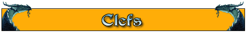

| Code des couleurs |
|---|
| Trouvable sur Arakas |
| Trouvable sur Raven's Dust |
| Trouvable sur Stoneheim |
| Trouvable dans les Zones Séraphes |
| Ajout version 1.25 |
| Invoc GM |
| Nom | Caractéristiques |
|---|---|
Clé de fer |
|
Clef de pierre |
|
Clés des ténèbres |
|
Parchemin d'Enchantement |
- |
Clé de Reynen |
Quetes d'acces Bon à Stoneheim - Clé Royale 1 |
Clé royale #1 |
|
Clé royale #2 |
|
Clé royale #3 |
|
Clé royale #4 |
|
Clé royale #5 |
|
Clé royale #6 |
|
Clé d'ivoire |
- |
Clé de Madrigan |
- |
Clé d'Artherk |
Fin - Oracle accès good |
Clé d'Ascension |
- |
Clé d'Ogrimar |
Fin - Oracle accès evil |
Clé de fer noircie |
- |
Clé de l'âme en peine |
- |
Clé du Banni |
- |
Clé du Chaos |
- |
Clé Tordue |
- |
Clef brillante en Orichalque |
- |
Clef de pierre brute |
- |
Clef du coffre-fort |
- |
Clef en os Poli |
- |
Clef éthérée |
Quête de la clef éthérée |
Clef éthérée brisée |
Quête de la clef éthérée brisée |
Clef solide en or |
- |
Petite clef d'argent |
- |